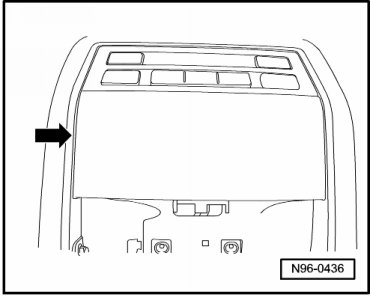
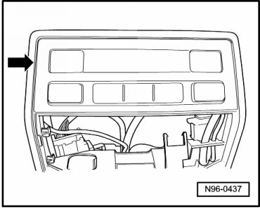
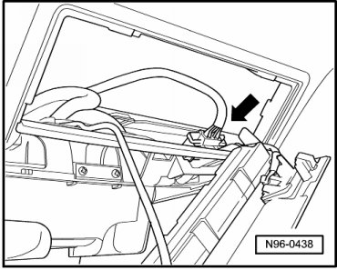
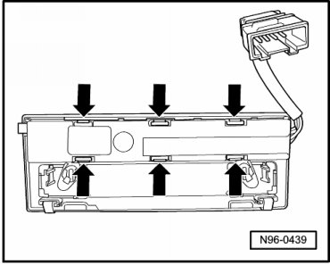

Front Interior/Reading Lamp Button Module
Roof Trim Lamps and Switches
Front Interior/Reading Lamp Button Module
The button module consists of the following components:
• Front interior lamp button (E326)
• Driver's reading lamp button (E457)
• Front Passenger's Reading Lamp Button (E458)
CAUTION!
When removing and installing components in visible area (switches, covers, trim, etc.), cover by taping the areas at which a prying tool (plastic wedge, screwdriver) will be positioned using commercially available adhesive tape.
• Buttons cannot be replaced separately. If repairs are necessary, the entire button module must be replaced.
Removing
- Switch off ignition, switch off all electrical consumers and remove ignition key.
- Carefully pry cover out of console in molded headliner - arrow -.

- Carefully pry button module for interior reading lamp out of console in molded headliner - arrow -.

- Release and disconnect the connector - arrow -.

- Unclip both microphones of hands-free equipment.
- Disengage retaining tabs - arrows - and remove button module from frame.

Installing
Install in reverse order of removal.